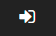
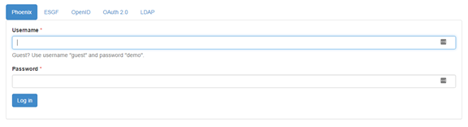
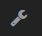
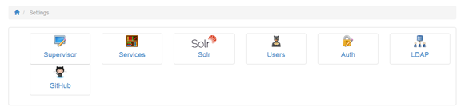
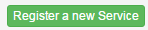
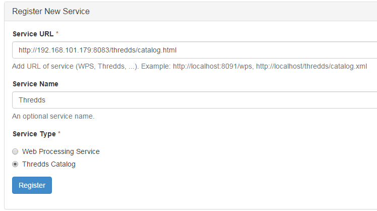
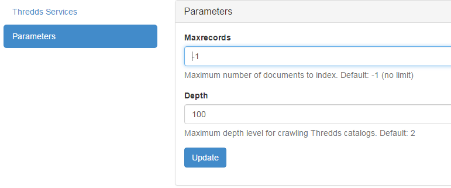
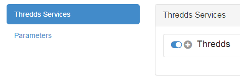

Installation and Configuration¶
Todo
Update the installation and config with security changes
Since all of the code produced for the PAVICS project is hosted on public GitHub repositories, and that the preferred methodology for packaging and deployment uses Docker images, we set out to use the automatic Docker Image building feature of DockerHub. This feature automatically builds a new image for every push to the GitHub repository for all given branches, given that these repositories have a Dockerfile. The resulting images are all publicly available for container execution and sharing of our work. Any docker image can be obtained using the following command:
docker pull pavics/pavics-datacatalog
Most of the code base has been forked from the Birdhouse project which already has multiple DockerHub build processes. Using our own DockerHub builds gives us the advantage of having our own upstream build process for the code being modified by CRIM / Ouranos. Many of the modifications to these birdhouse components are merged upstream, but some are specific to the PAVICS project and we felt it was worthwhile to have this independent build process.
Installation using docker-compose¶
Let’s assume that you have a LinuxOS with Docker (>1.10) installed.
First mount or create a symlink for the datasets storage at /data.
Mount or make a symlink for the geoserver data storage so that /geoserver_data could be used (read/write) by geoserver.
To install the suite of docker images, we use docker-compose, so you’ll need to install it:
sudo pip install docker-compose
Then get the build recipe from pavics-sdi:
git clone https://github.com/Ouranosinc/pavics-sdi.git
cd pavics-sdi/birdhouse
In the file docker-compose.yml, within the phoenix/volumes configuration, set the environment variable SSL_CERTIFICATE to a valid certificate. The certificate file should contain both the CERTIFICATE and PRIVATE KEY parts as required by the nginx “ssl_certificate_key” and “ssl_certificate” parameters.
Then simply run the following command, taking care to select an appropriate host name:
HOSTNAME='boreas.ouranos.ca' bash -c 'docker-compose up -d'
This installation will run on a single server instance, but there are instructions for Load balancing.
Updating container to the latest version¶
To synchronize a deployment with the latest version of container available on dockerhub:
# Set working directory where the docker-compose.yml is located. Usually :
cd ~/pavics-sdi/birdhouse
# Docker required sudo access
sudo su
# Pull the latest containers (container_name is optional but can limit the operation to only one container rather than applying to all containers)
HOSTNAME='<public-ip>' bash -c 'docker-compose pull [container_name]'
# Stopping containers
HOSTNAME='<public-ip>' bash -c 'docker-compose stop [container_name]'
# Start again containers (-d is for detached, avoid it to get all output to the command line)
HOSTNAME='<public-ip>' bash -c 'docker-compose up -d [container_name]'
Note
container_name is the name chosen in the docker-compose.yml, not the name of the docker image.
Resetting the birdhouse dockers¶
If the VM became unusable the docker containers can easily be reset to default:
# Docker required sudo access
sudo su
# Stopping and removing containers (this will flush their states)
HOSTNAME='<public-ip>' bash -c 'docker-compose down'
# Start again containers (-d is for detached, avoid it to get all output to the command line)
HOSTNAME='<public-ip>' bash -c 'docker-compose up -d'
Some manual tasks are required after resetting the birdhouse environment : See the manual steps under the Phoenix configuration
Restarting the birdhouse dockers¶
If the dockers containers need to be stopped (including the docker service if required). These steps will preserve the docker state and thus all configurations done using the web sites:
# Docker required sudo access
sudo su
# Stopping running containers
HOSTNAME='<public-ip>' bash -c 'docker-compose stop'
# Stopping the docker service
service docker stop
And starting dockers (required after restarting the host vm):
# Docker required sudo access
sudo su
# Starting the docker service
service docker start
# Starting the birdhouse containers
HOSTNAME='<public-ip>' bash -c 'docker-compose start'
Ports¶
The docker-compose.yml config file exposes ports for each docker container (left part is the public one, right part the container internal one). We try to respect the following convention:
8xxx : port usually responding for the service (The HTTP port)
28xxx: https port
38xxx: the output port (To be documented)
48xxx: the supervisor port of the container
Container xxx value:
Phoenix : 443 (With 8081 as http and 8443 as https)
Malleefowl : 091
Flyingpigeon : 093
Emu : 094
Solr : 983 (No https or output ports)
ncWMS2 : 080 (No https or output ports)
thredds : 083 (No https or output ports)
pavics-catalog : 086 (No https or output ports)
geoserver : 087 (No https or output ports)
The exception is the Pavics-frontend, which has port 3000.
Individual Components Configuration¶
All birdhouse components are deployed and configured using the same technique, which consists in:
- Run
docker-composeon adocker-compose.ymlconfig file to launch a group of containers using their images and some options. - When a container is starting a make call with the target update-config and start is done (specified by the dockerfile CMD statement)
- The update-config target update the container application config using buildout and the custom.cfg config file
- The start target launch the application using supervisor
- To customize the container application config we must update the custom.cfg file used by the buildout recipe of each container.
Since custom.cfg is built into the docker image and thus reset each time we run an image the only way to alter it is to mount a host file inside the container using the volume option. Therefore a custom.cfg is configured on host for each birdhouse component and mounted inside the container using the volume option of the docker-compose.yml file. This way each time a container is started, it is configured by the host custom.cfg file which indeed persist the lifecycle of a container
The custom.cfg is a buildout configuration file which extends buildout.cfg providing default parameters. Each birdhouse component has it’s own buildout recipe looking for particular parameters to configure their application. An exemple of recipe for ncWMS can be found here: https://github.com/bird-house/birdhousebuilder.recipe.ncwms. Look on github for other components recipe : https://github.com/bird-house.
Phoenix¶
/config/phoenix/custom.cfg¶[settings]
# User: admin, Password: querty
phoenix-password = sha256:...
To change password get into the phoenix running container and use make passwd. This will update the persistant host custom.cfg with the new password hash.
If an error about missing IPython.lib occurs install ipython like this:
source $ANACONDA_HOME/bin/activate birdhouse
pip install ipython
Phoenix still need manual configuration so SOLR indexes correctly the TREDDS catalog. Here are the steps:
Go to https://<platform_url>:8443/
Click on the login button 
Use the admin phoenix access with ‘querty’ password:
Go to the settings page 
Click on the service button:
Register a new service:
Fill the form using the thredds catalog url (use the OpenStack internal IP), a service name of your choice and be sure to check the Thredds Catalog service type :
Click on the register button
Go to the Solr settings page by repeating the steps 4 and 5 but this time using the Solr button.
Use the Parameters tab and increase the crawling depth to match the deepest catalog depth :
Activate the crawling in the Thredds Services tab by clicking on the toggle button near the + symbol.
The status should turn to green when you click on the refresh button.
You’re done !
ncWMS¶
/config/ncwms2/custom.mfg¶[settings]
tomcat-ncwms-password = <enter ncwms password>
[ncwms]
data_dir = /pavics-data
Manual setup of the running docker¶
To access the ncWMS admin page (changes be overriden each time the container is restarted), edit the file: /opt/conda/envs/birdhouse/opt/apache-tomcat/conf/tomcat-users.xml and remove the comment block around the manager-gui and ncWMS-admin role.
The administration page allow administrators to add new datasets but again it will not persist upon container restarting.
Default Tomact credentials:
username="birdhouse"
password="4FO72WcTt7K9gYiNKApf"
Default ncWMS credentials:
username="admin"
password="ju68hfld"
Dynamic services¶
The dynamic services section allow with only one command to enable access to all the database available at M:data16projetsmultiPAVICSdata by configuring a file system entrypoint. The only thing to do is to use the following url: http://<domain>:8080/ncWMS2/wms?SERVICE=WMS&REQUEST=GetCapabilities&VERSION=1.3.0&DATASET=outputs/<path>
and replace <path> by the relative path to M:data16projetsmultiPAVICSdata to the required dataset. So thanks to this config and to the catalog service we should be able to get the entire database list from the catalog and access their WMS by using the relative path in the wms url.
Thredds¶
[thredds]
data_root = /pavics-data
allow_wcs = true
allow_wms = true
Hummingbird¶
First try at running CDO operation using the Hummingbird WPS (with url for input NetCDF file, only seems to work with the fileserver, not OPeNDAP), e.g. : http://132.217.140.31:8092/wps?service=WPS&version=1.0.0&request=Execute&identifier=cdo_operation&DataInputs=dataset=http://192.168.101.175:8083/thredds/fileServer/birdhouse/nrcan/nrcan_canada_daily/nrcan_canada_daily_pr_1960.nc;operator=monmax returns “PyWPS Process cdo_operation successfully calculated”. However the output points to a NetCDF file on localhost (http://localhost:38092/wpsoutputs/hummingbird/output-4f80cb02-58db-11e6-8a37-533b457038a6.nc). Need to substitute localhost for the ip (132.217.140.31) and keep the same port : http://132.217.140.31:38092/wpsoutputs/hummingbird/output-4f80cb02-58db-11e6-8a37-533b457038a6.nc Previous note: the same operation with the command-line, and using the OPeNDAP link (i.e. >> cdo monmax http://132.217.140.31:8083/thredds/dodsC/birdhouse/nrcan/nrcan_canada_daily/nrcan_canada_daily_pr_1960.nc output.nc) succeeds, in ~3 minutes. It is much faster if the file is local. This brings up the question of whether we should pass the catalogue url when we know the file is actually on a local machine… Trying to execute the same process via our Phoenix installation is not possible. The execute button remains greyed out after entering an url and selecting an operator.
PAVICS-DataCatalog¶
In the catalog.cfg file: Provide the solr and thredds host. Set the wps host to the server that will be exposing the catalog (this is the server where wps temporary output files will be saved). Set the WMS alternate server if desired.
Magpie¶
Todo
Complete